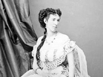
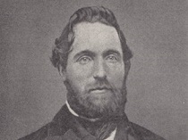
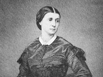
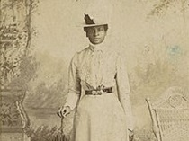
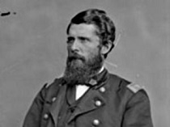
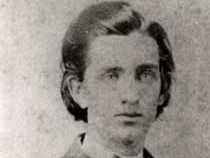

Who were the spies in the Civil War and what effect did they have on it?
In a war where one’s appearance and speech did not give away one’s loyalty, espionage and spying thrived. Both the north and south used spies to obtain crucial information from the other side during the civil war. Not only did espionage bring in crucial information it also brought upon equal rights and access to jobs for African Americans and women. Certain spies affected the outcome of the war more than others. The following spies all had a major affect on the war.
-

Belle Boyd was a Confederate spy. On July 4, 1861, Belle Boyd’s town, Martinsburg, was was taken by Union soldiers. The day this happened, she began her spy career by shooting a union soldier looking through her house. As time went on, she stayed a loyal confederate and collected information from the Union soldiers. In 1862, Boyd moved to the Front Royal, Virginia, where she resided in the same house as Union General James Shields. From this, Belle Boyd was able to warn General Stonewall Jackson of a union attack by sneaking out at night and riding upon horseback to their army stationed nearby. Later that month, when she gained knowledge the union army were fleeing and burning the bridges so the Confederate Army couldn’t catch them, she ran past the union front lines with soldiers shooting at her and came to Confederate General Jackson, telling him about their plan. They were able to salvage the bridges and continue their famous Shenandoah Valley Campaign. All in all, Belle Boyd was placed under arrested six times, thrown in prison three times, and exiled twice. She finally ended up in London, married to the Union Navy officer who had previously captured her.
-

Timothy Webster was a union spy. He began his career in spying after raising through the ranks and becoming one of New York City Police Department’s best detectives. In February 1861, He caught wind of an attempt to assassinate Abraham Lincoln while the president-elect was transferring trains in Baltimore. Just in time though, he was able to inform officials who changed Lincoln's route and saved his life. When the civil war began, he was recruited by Union General George B. McClellan to spy on the Confederacy. Through his spying, he was able to develop connections with very prominent confederate individuals in the states of Mississippi, Tennessee, Arkansas, and Kentucky, even being offered a position on their army, to which he declined. Webster then moved to Richmond, where he became a courier for the Confederate's "secret line" between Washington, Baltimore, and Richmond, intercepting and reporting all the information he found to union officials. He was finally executed, the first spy to be in the civil war, after two other union spies revealed his true identity to avoid being executed themselfs.
-

Rose O’Neal Greenhow, nicknamed Wild Rose, was a confederate spy. She started by organizing her own spy ring in her enemy's capital, and used the information she gathered to help the Confederacy win at least one battle. She was undaunted by prison, and continued to gather information and send it south. Rose O'Neal Greenhow was able to use her powerful social connections in Washington to gather valuable information. On one occasion, she learned of Union plans to attack the Confederates at Manassas, Virginia. She immediately sent word of these plans south. Because of the the intelligence she provided, Confederate General P. G. T. Beauregard was able to concentrate his forces in time to meet and defeat the Union forces at the First Battle of Manassas (Bull Run). There were high suspicions of her and she was put under surveillance by union officials. When Allan Pinkerton concluded he had enough evidence against her, she was arrested and contained in her house, along with some other Confederate spies. She was then exiled to the confederacy, went to Europe to better their cause and drowned on her voyage back.
-

Mary Bowser was a Union spy. Despite little being known about her, she is considered one of the best Civil War spies. She grew up in Richmond, moved to Africa, then came back and worked for the Van Lew family. She became part of Miss Van Lew’s spy network, gathering information for the union through her position as a servant in the Confederate White House. Because she was black, confederate officials assumed she was illiterate and didn’t hide any sensitive content about the war from her. As a result, she was very effective in finding valuable information about the Confederate Army that was then transferred to union Officials through an elaborate system of communication. Once the war had ended, Bowser taught to freed slaves and quickly disappeared. (While this was long thought to be Mary Bowser, it has recently been revealed that this is a Mary Bowser who lived 30 years later. The real Bowser has no photographs that lasted to this day.)
-

LaFayette Baker was a union spy. He started this career after coming from California and having an interview with the Union Commander at that time, which was General Winfield Scott. He was then asked to undertake an espionage mission and after two failed attempts, he finally made it into Confederate territory> only to be taken and brought to Richmond for interrogation by Confederate President, Jefferson Davis, to whom he convinced his innocence and was granted a pass to Fredericksburg, Virginia. He then narrowly escaped to the Union and was appointed to the head of the intelligence department by General Scott. At this position, Baker had many achievements, such as revealing widespread corruption in the Treasury department. He was demoted and then re-promoted to track down President Lincoln's assassin, something he completed in less than two weeks. Finally, just before his death in 1868, Baker was fired for spying on the white house.
-

Sam Davis, referred to as the boy hero of the Confederacy, was a Confederate soldier and took part in Stonewall Jackson’s Shenandoah Valley Campaign, where he was wounded at the Battle of Perryville. After recovering, Davis joined Coleman's Scouts, a band of Army scouts who spied and delivered information and messages for the Confederate Army of Tennessee. Sam Davis's position in Coleman's Scouts was that of a courier. In late 1863, Captain Coleman and a number of his men were spying out the Union forces in the Nashville area. When they had gathered sufficient information, several men were dispatched to carry the reports to Confederate General Braxton Bragg. On their way, they were captured by the 7th Kansas Cavalry and placed under arrest for being southern sympathizers. He was identified as a spy and executed on November 27, 1863 by the Union army.